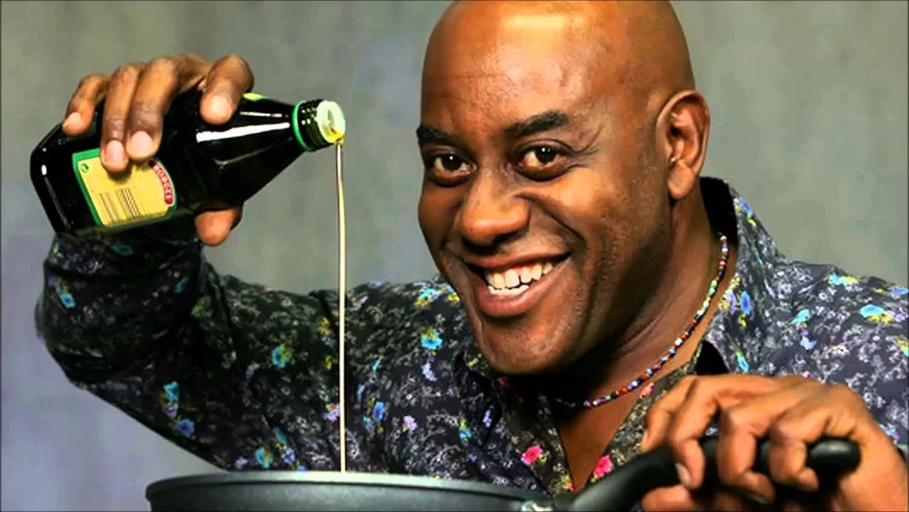

A Few Gluten-Free Recipes
Hover here for a cool, good, and unrelated photo of Ainsley Harriott

Here is a small collection of gluten-free recipes:
Indian Chicken Curry (Murgh Kari)
Cauliflower Pizza Bites
Gluten-Free Sugar Cookies